CS460 : Final Report
Creating an AI bot to trade FOREX in the Stock Market
Submitted as part of course requirements for CS460: Machine Learning, Fall 2021
Offered by the School of Computer Sciences,
National Institute of Science Education and Research,
Bhubaneswar.
Course Instructor: Dr. Subhankar Mishra
Faculty Mentor: Dr. Amarendra Das
Meanwhile, sciences that involve human beings rather than elementary particles have proven more resistant to elegant mathematics. Economists suffer from physics envy over their inability to neatly model human behavior... But if that’s so, we should stop acting as if our goal is to author extremely elegant theories, and instead embrace complexity and make use of the best ally we have: the unreasonable effectiveness of data.
Review: What's done till now...
Fitting of Models?
- Collection of data from the MetaTrader 5 and FXCM APIs.
- Fitting of models based on linear regression, logistic regression, perceptron, AutoRegressive Integrated Moving Averages (ARIMA) and facebook Prophet.
- The ARIMA model was the most accurate model of all the five considered. However, it was also the one which took the longest to train and the longest to predict future tick values of the exchange rate.
- Training on the model and testing of the model on separate sets of data, to verify whether the trading-strategies actually work.
We tried a decision tree model too in addition to the above mentioned models. We chose the decision tree based model to be the underlying algorithm behind out trading bot because :
- Trees require minimal data cleaning operations. They work without normalisation, and often with missing values too.
- A decision tree construction takes \(\mathcal{O}(2^n)\) time, but once a decision tree has been constructed, reaching the decision is fast as it takes \(\mathcal{O}(log(n))\) time.
- Overfitted trees can be dealt with ensemble methods.
- Effect of small variations in the data might also be overcome by using ensemble methods.
Creating a decision tree with scikit learn's sklearn.tree.DecisionTreeClassifier, the main hyperparameter to fit was the depth of the tree using this script.
- Gini impurity was used as the criterion to decide which feature should be used to split each node.
- A leaf node would have at most 15 samples. If the number of samples is more than 15 in a node, it is attempted to split that node.
- The depth of the tree was decided by trial and error.
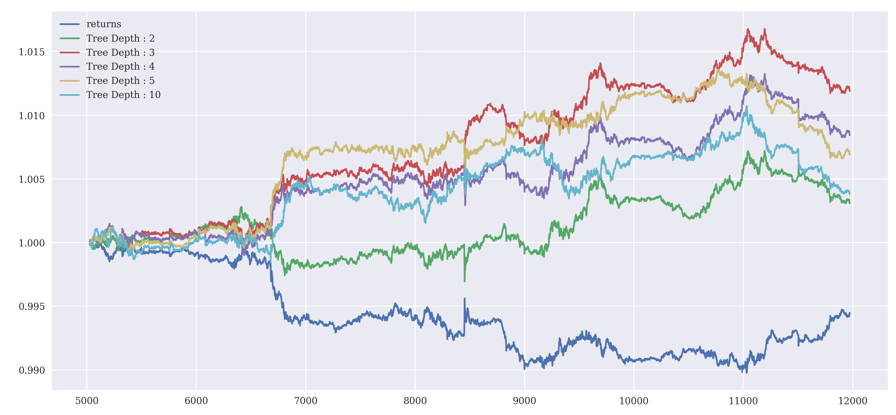
The performance of decision trees with varying depths is summarized in the table below.
| Tree Depth | Train Accuracy | Test Accuracy | Number of trades | Gross Performance |
|---|---|---|---|---|
| 2 | 0.568 | 0.533 | 973 | 1.003 |
| 3 | 0.586 | 0.534 | 925 | 1.011 |
| 4 | 0.593 | 0.535 | 91179 | 1.008 |
| 5 | 0.605 | 0.547 | 1415 | 1.007 |
| 10 | 0.672 | 0.532 | 3391 | 1.004 |
Therefore, a tree with depth three gives the best performance.
Analysis: Can we do better...
History never repeats itself, but it rhymes.
Normalization?
The features were normalized so that no feature is arbitrarily large and all features are of the same scale. The magnitude of no feature has an undue influence on the prediction of the future exchange rate and the best possible classification is obtained.
- Centering : The entire feature set is shifted so that it is centred around the mean.
$$x_{n, d} \leftarrow x_{n, d}-\mu_d$$
- Variance scaling : The feature set has a variance of one across the input data used for training the model
$$x_{n, d} \leftarrow \frac{x_{n, d}}{\sigma_d}$$
mu=np.mean(dataLags, axis=0)
std=np.std(dataLags, axis=0)
normalisedData=(dataLags-mu)/std
With the increase in the number of features, the testing accuracy of the model increases along with an increase in the performance of the model.
Output:
Without Normalisation:
Training Accuracy
0.571375
Testing Accuracy
0.5448328267477204
With Normalisation:
Training Accuracy
0.57075
Testing Accuracy
0.5531914893617021
No. of trades :
Without Normalisation : 1153
With Normalisation : 221
Gross Performance :
returns 1.000563
strategy_No_Norm 1.000555
strategy_Normalised 1.002912
dtype: float64
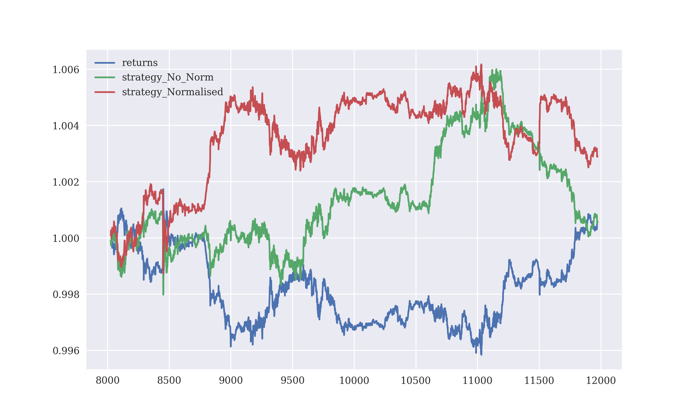
With normalisation, the performance of the model becomes more consistent (red line) as compared to without normalisation (green line). The blue line is the base returns.
Feature Engineering?
Earlier lag number of immediately preceding values of the exchange rate was being used for the prediction of the future exchange rate. The feature vector set was expanded by engineering the following features:
- Rolling volatility of the exchange rate for the immediately preceding rolling window using pandas.DataFrame.std()
- Momentum of the exchange rate as the mean for the immediately preceding rolling window using pandas.DataFrame.mean()
- Minimum value of the exchange rate in the immediately preceding window values using pandas.DataFrame.min()
- Maximum value of the exchange rate in the immediately preceding window values using pandas.DataFrame.max()
raw['returns'] = np.log(raw / raw.shift(1))
window=20
raw['vol']=raw['returns'].rolling(window).std()
raw['mom']=raw['returns'].rolling(window).mean()
raw['sma']=raw['close'].rolling(window).mean()
raw['min']=raw['close'].rolling(window).min()
raw['max']=raw['close'].rolling(window).max()
raw['direction']=np.where(raw['returns']>0, 1, -1)
self.data = raw.dropna()
With the increase in the number of features, the testing accuracy of the model increases along with an increase in the performance of the model.
Output:
Without Feature Engineering:
Training Accuracy
0.57275
Testing Accuracy
0.5466058763931104
With Feature Engineering:
Training Accuracy
0.57075
Testing Accuracy
0.5531914893617021
No. of trades :
Without Feature Engineering: 924
With Feature Engineering: 221
Gross Performance :
returns 1.000563
strategy_No_Engg 0.998158
strategy_FEngg 1.002912
dtype: float64
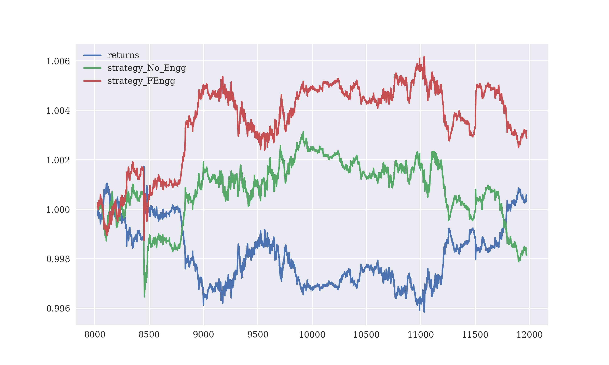
With feature engineering, the performance of the model improves (red line) as compared to without feature engineering (green line). The blue line is the base returns.
For the comparison of the effects of normalisation and feature engineering on the performance of the model, they are plotted on the same graph using this script.
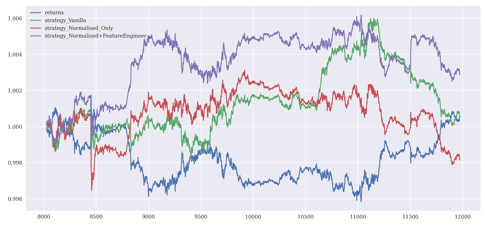
The table here lists the relevant performance parameters.
| Condition | Train Accuracy | Test Accuracy | Number of trades | Gross Performance |
|---|---|---|---|---|
| Feature Engineering only | 0.571 | 0.545 | 1153 | 1.0005 |
| Normalization only | 0.573 | 0.547 | 942 | 0.998 |
| Both | 0.605 | 0.553 | 221 | 1.003 |
Both feature engineering and normalization increase the testing accuracy and decrease the number of trades performed.
Bagging?
Bagging creates several instances of the model classifier (decision tree in this case) which are trained on random subsets of the training data. A voted average of the individual classification predictions is taken as the net prediction. Bagging tries to reduce the variance and avoid overfitting of the decision tree by introducing randomness in the construction of the decision tree.
Bagging with its promise of reducing variance bring a host of other hyperparameters. We used scikit-learn's sklearn.ensemble.BaggingClassifier() with the following hyperparameters
- Base estimator is a decision tree with height three and at least fifteen data points for it to be a leaf node
- 100 base estimators in the ensemble
- Train the decision tree on the entire training dataset
- Out of the available 36 features, use some random 24 of them to construct the decision tree
from sklearn.tree import DecisionTreeClassifier
from sklearn.ensemble import BaggingClassifier
maxDepth=3
minSamplesLeaf=15
subsample=0.33
nEstimators=15
maxSamples=1.0
maxFeatures=0.75
randomState=100
tree=DecisionTreeClassifier(random_state=randomState, max_depth=maxDepth, min_samples_leaf=minSamplesLeaf)
model=BaggingClassifier(base_estimator=tree, n_estimators=nEstimators, max_samples=maxSamples, max_features=maxFeatures, random_state=randomState)
Bagging increases the performance of the model slightly in the near future but lags behind farther in the future.
Output:
Without Bagging :
Training Accuracy
0.5856
Testing Accuracy
0.5335348301669545
With Bagging :
Training Accuracy
0.5856
Testing Accuracy
0.5533966609096143
No. of trades :
Without Bagging : 925
With Bagging : 1069
Gross Performance :
returns 0.994459
strategy_No_Bag 1.011918
strategy_Bagging 1.018981
dtype: float64
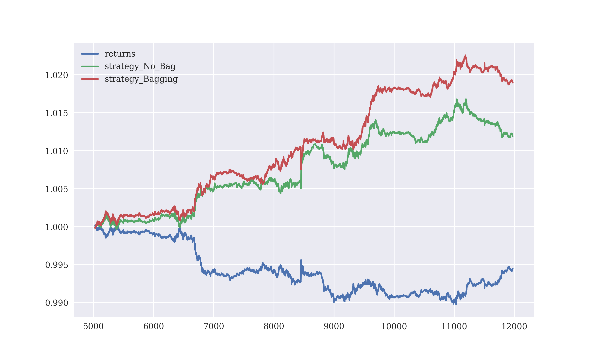
Using bagging, the performance of the model becomes better initially (red line) but suffers a little setback (after an abrupt fluctuation in the exchange rate around the tick point 8500). Overall the performance with bagging is better than the performance without bagging (green line). The blue line is the base returns.
Boosting?
Boosting tries to fit an ensemble of weak learners (models with high bias) on the training data, whose predictions are aggregated to get the final prediction. At each iteration, the weights for the training data points, whose labels are incorrectly predicted by the model, are increased and the model is focussed to learn from the data points it has failed to predict correctly.
Boosting again introduces a host of other hyperparameters. We used scikit-learn's sklearn.ensemble.AdaBoostClassifier() with the following hyperparameters
- Base estimator is a decision tree with height three and at least fifteen data points for it to be a leaf node
- 15 base estimators in the ensemble
from sklearn.tree import DecisionTreeClassifier
from sklearn.ensemble import AdaBoostClassifier
nEstimators=15
randomState=100
maxDepth=3
minSamplesLeaf=15
subsample=0.33
tree=DecisionTreeClassifier(random_state=randomState, max_depth=maxDepth, min_samples_leaf=minSamplesLeaf)
model=AdaBoostClassifier(base_estimator=tree, n_estimators=nEstimators, random_state=randomState)
With boosting the performance of the trading model trails the gross performance of a single decision tree.
Output:
Without Boosting:
Training Accuracy
0.5856
Testing Accuracy
0.5335348301669545
With Boosing:
Training Accuracy
0.8294
Testing Accuracy
0.5063327576280944
No. of trades :
Without Boosting : 925
With Boosting : 4721
Gross Performance :
returns 0.994459
strategy_No_Boost 1.011918
strategy_Boosting 1.006535
dtype: float64
As one can see, boosting increases the training accuracy significantly but the testing accuracy does not increase. It shows that, with boosting the model overfits the training data. Hence, boosting is not applicable in our case. The model has a high bias and boosting does not help in reducing that.
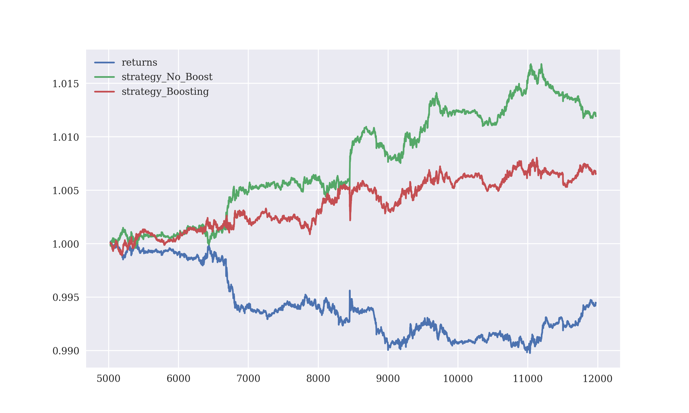
With boosting (red line), the performance of the strategy trails the gross performance of the decision tree. The blue line is the base returns.
Random Forest?
Random Forests tries to decrease the variance and prevent overfitting of the model. Random errors in the predictions from the decision trees might cancel, and reduce the variance.
Using scikit-learn's sklearn.ensemble.RandomForestClassifier() with the following hyperparameters
- Base estimator is a decision tree with height three and at least ten data points for it to be a leaf node
- 100 base estimators in the ensemble
- 0.80 part of the sample was used for the training of each tree
from sklearn.ensemble import RandomForestClassifier
nEstimators=100
randomState=100
maxDepth=3
minSamplesLeaf=10
maxSamples=0.80
model=RandomForestClassifier(n_estimators=nEstimators, max_depth=maxDepth, max_samples=maxSamples, min_samples_leaf=minSamplesLeaf, random_state=randomState)
Using a random forest does increase the performance of the model.
Output:
Using a single Decision tree:
Training Accuracy
0.5866
Testing Accuracy
0.5367012089810017
Using a Random Forest:
Training Accuracy
0.5788
Testing Accuracy
0.5533966609096143
No. of trades :
With single tree : 873
With random forest : 565
Gross Performance :
returns 0.994459
strategy_Tree 1.013235
strategy_Random_Forest 1.013452
dtype: float64
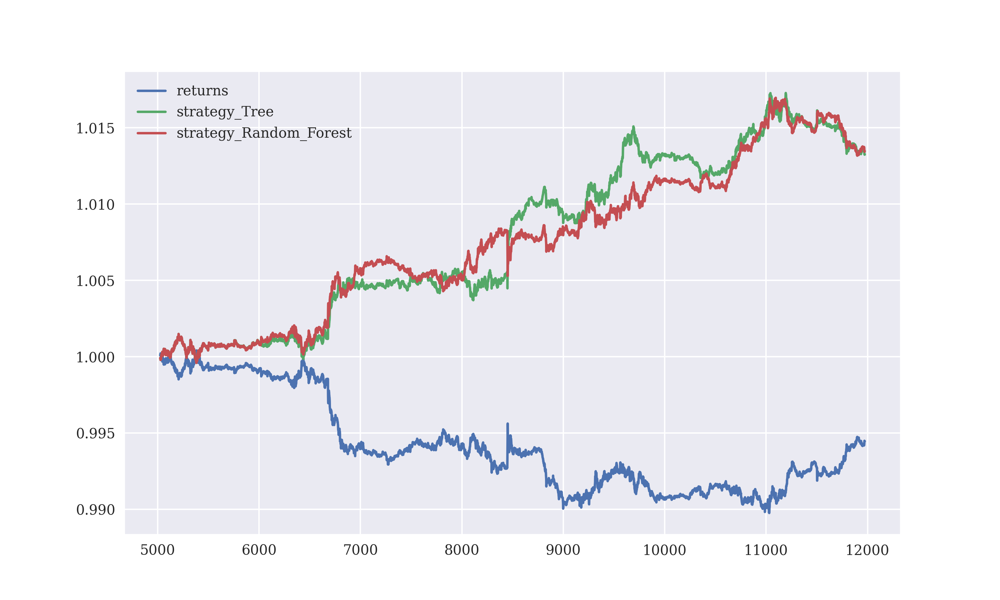
Using a random forest, the performance of the model (red line) becomes slightly better than the performance with a single decision tree (green line). The blue line is the base returns.
Again for the purposes of comparison using this script, the performance of the three ensemble methods have been plotted in a single graph and their performance parameters listed in the table below.
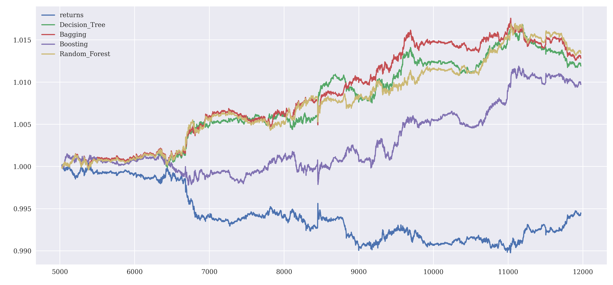
| Ensemble Method | Train Accuracy | Test Accuracy | Number of trades | Gross Performance |
|---|---|---|---|---|
| Single Tree | 0.5856 | 0.5335 | 925 | 1.0119 |
| Bagging | 0.5834 | 0.5532 | 793 | 1.0128 |
| Boosting | 0.6452 | 0.5332 | 3901 | 1.0097 |
| Random Forest | 0.5788 | 0.5534 | 565 | 1.0134 |
Bagging and Random forests increase the performance and the testing accuracy by decreasing the variance of the single estimators (a decision tree which usually has high variance). Boosting overfits the training data resulting in high training accuracy but poor performance and a huge number of trades are incurred.
Leverage: Turn on the heat... Raise the bar...?
Financial institutions like to call what they do trading. Let’s be honest. It’s not trading; it’s betting.
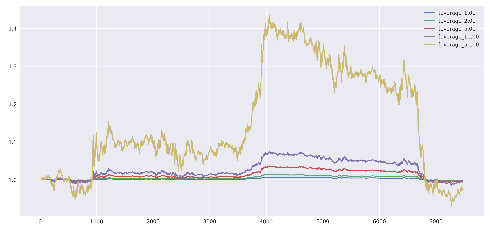
As shown in the graph, leverage might increase profits, but it also increases losses (like it does at the end of the testing period). It makes markets choppy.
High Risk Investment Notice: CFDs are complex instruments and come with a high risk of losing money rapidly due to leverage. 67% of retail investor accounts lose money when trading CFDs with this provider. You should consider whether you understand how CFDs work and whether you can afford to take the high risk of losing your money. Trading Forex/CFDs on margin carries a high level of risk and may not be suitable for all investors.
After the log returns were calculated, its mean and variance values were calculated and the optimal leverage was determined as $$f=\frac{Mean}{Variance}$$ For the duration of 5000 minutes, the optimal leverage was calculated as 10:1 for the trading strategy adopted.
Optimal Leverage by full Kelly criterion:
returns -13.894910
strategy 1885.394094
dtype: float64
Optimal Leverage by half Kelly criterion:
returns -0.075079
strategy 10.101941
dtype: float64
With the application of leverage, the risks increase. To quantify the risks the maximum drawdown and the longest drawdown period (longest period between two consecutive highs of the returns) is calculated. Values of these two parameters on the testing data is indicative and no guarantee for future performances.
With introducing leverage, returns become more volatile, they fluctuate more. Maximum drawdown is the largest difference between a previous high in returns and the current returns. It quantifies the maximum losses that might be incurred after making some profits, or the profits that might be eaten up due to bad market movements. The longest drawdown period is the longest duration the model takes to do better than its previous high. As an aside, Japan’s Nikkei stock index has its drawdown period at 277 months (and counting) - older than me.
Maximum Drawdown : 0.20560
Max. Drawdown period : 298 mins
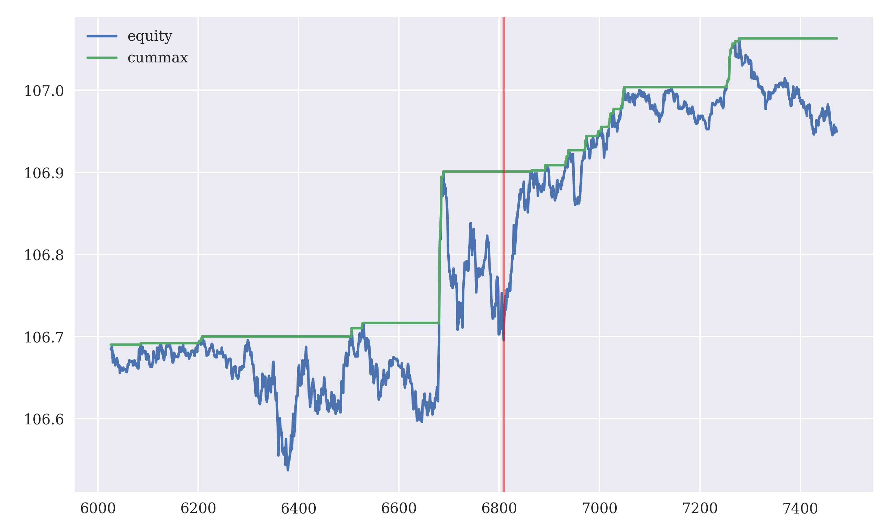
The drawdown would be the difference between the current rate (blue line) and the cumulative maximum of the return rate (green line). The maximum drawdown of 0.20560 occurs at the position denoted by the vertical red line. The drawdown periods are denoted by the horizontal green lines.
The value-at-risk was calculated as the maximum amount of capital that might be expected to be lost in the considered time frame of trading, quoted with a certain confidence level.
Level of Confidence Value Risked
--------------------------------------------------
99.99 % 6.057
99.90 % 3.192
99.00 % 1.705
97.50 % 1.275
95.00 % 0.937
90.00 % 0.597
So, under the tested conditions one can be sure with \(99.99\%\) that the losses would not exceed €6 for the duration of trading using the given model. $$Value-at-risk = Percentile\,of\,returns \times capital$$
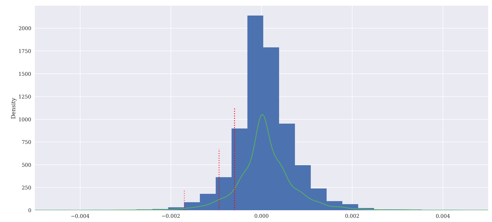
Before trading in a pair of currencies, the parameters for managing risks have to be set properly to avoid losses. The maximum drawdown and value-at-risk determined here using this script are directed risk measures - they quantify losses only as opposed to volatility which is an undirected risk measure - it is high both when exchange rates appreciate or depreciate.
Creating the BOT
The testing does till now does not mimic the real life trading process because:
- Look ahead bias - The complete testing data is available to the testing class beforehand, while in real life data arrives periodically and bit-by-bit as ticks, which is recified in this script.
- Event based decisions cannot be taken to minimize risks associated with trading. The decision is taken as the data arrives.
- Speed of execution of the entire trading process - streaming of live data, processing in real time and executing a decision within a minute is necessary for executing one-minute trades.
People worry that computers will get too smart and take over the world, but the real problem is that they’re too stupid and they’ve already taken over the world.
To reduce risks while trading we stop losses, and take profits, by comparing the current volatility to the average true range over the last thirty minutes usimg this script. $$True\,Range=Max[(High-Low), Abs(High-Close), Abs(Close-Low)]$$ $$Average\,True\,Range=\frac{1}{n}\sum_{i=1}^{n} (True\,Range)_i$$
win=30
price['min']=price['close'].rolling(win).min() #rolling minimum
price['max']=price['close'].rolling(win).max() #rolling maximum
price['range']=price['max']-price['min'] #difference between the rolling maximum and minimum
price['maxToday']=abs(price['max']-price['close'].shift(1)) #difference between the rolling maximum and the previous day's closing price
price['minToday']=abs(price['min']-price['close'].shift(1)) #difference between the rolling minimum and the previous day's closing price
price['atr']=np.maximum(price['range'], price['maxToday']) #calculate the greater value of the max-min range and the max-price difference
price['atr']=np.maximum(price['atr'], price['minToday']) #and min-price difference
price['atr%']=price['atr']/price['close']
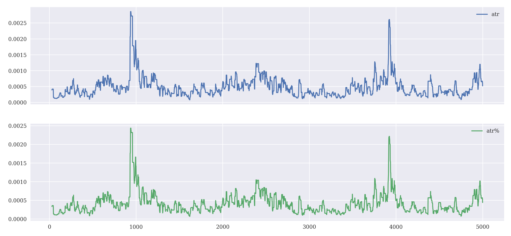
The absolute and relative average true returns do not differ much in the plot here as the closing values of the exchange rate remained around 1 in the selected interval.
Stop Loss
#check whether stop loss rate has been defined, and the trader has started trading
if self.sl!=0 and self.position!=0:
#calculate the difference of current exchange rate from the initial exchange rate
change=(price-self.entryPrice)/self.entryPrice
#if the loss incurred is greater than the acceptable loss set by stopLoss()
if change<-self.sl and self.position==1:
print(60*'-')
print('--- STOP LOSS (LONG | -{self.sl}) ---')
#sell off the forex held, anticipating still lower exchange rate
self.go_short(bar-1, units=self.units)
#set the market position to short (sold)
self.position=-1
#if the exchange rate is higher than expectations
elif change>self.sl and self.position==-1:
print(60*'-')
print('--- STOP LOSS (SHORT | -{self.sl}) ---')
#buy that forex, anticipating higher exchange rate in future
self.go_long(bar-1, units=self.units)
#set the market position to long (bought)
self.position=1
Take Profit
#check whether take profit rate has been defined, and the trader has started trading
if self.tp!=0 and self.position!=0:
#calculate the difference of current exchange rate from the initial exchange rate
change=(price-self.entryPrice)/self.entryPrice
#if the exchange rate is higher than that set by takeProfit()
if change>self.tp and self.position==1:
print(60*'-')
print('--- TAKE PROFIT (LONG | -{self.sl}) ---')
#sell off that currency to monetize the profit, anticipating a fall
self.go_short(bar-1, units=self.units)
#set the market position to short (sold)
self.position=-1
#if the exchange rate is lower than expectations
elif change<-self.tp and self.position==-1:
print(50*'-')
print('--- TAKE PROFIT (SHORT | -{self.sl}) ---')
#buy that forex, anticipating higher exchange rate in future
self.go_long(bar-1, units=self.units)
#set the market position to long (bought)
self.position=1
An Online Environment
In real life, data has to be streamed and processed in real time. We tried to replicate that environment for the testing of our models using the ZeroMQ library for the Python language. A data server was created to publish the exchange rate data, and clients were created to receive the data. This fits the publisher-subscriber pattern where the data is published by a single socket and retrieved by multiple sockets simultaneously in 'real' time.
import zmq
import time
contextObj = zmq.Context()
socketObj = contextObj.socket(zmq.PUB)
socketObj.bind('tcp://0.0.0.0:5555')
...
tickval=0
while tickval<7000:
tick='{} {}'.format('close', data_send[tickval])
socketObj.send_string(tick)
time.sleep(5+random.random())
tickval+=1
Instantiating a Context object with a socket of the PUB type for the server, bound to a local IP with port 5555 (tcp://0.0.0.0:5555), the data server was created to send data at the interval of around 5 seconds, using this script. For the client, another Context object was instantiated, connected to the socket of the publishing the data (tcp://0.0.0.0:5555) and subscribed to the required channel, from this Jupyter Notebook.
contextObj = zmq.Context()
socketObj = contextObj.socket(zmq.SUB)
socketObj.connect('tcp://0.0.0.0:5555')
socketObj.setsockopt_string(zmq.SUBSCRIBE, 'close')
received=socketObj.recv_string()
sym, val=received.split()
val=float(val)
Results: Deploying the bot
Considerable progress is needed before autonomous vehicles can operate reliably in mixed urban traffic, heavy rain and snow, unpaved and unmapped roads, and where wireless access is unreliable. Years of testing and regulatory approval will be required... autonomous vehicles are likely to be expensive and limited in performance. They will introduce new costs and risks. These constraints will limit sales. Many motorists will be reluctant to pay thousands of extra dollars for vehicles that will sometimes be unable to reach a destination due to inclement weather or unmapped roads.
Online trading platforms allow streaming of financial data. Machine learning has been used to predict the direction of exchange rate movements. Can they be put together to work as an autonomous unit? We have tried that here.
A (hopefully new) Model
We had tried several models, each performing better in a certain condition. On an average, non-linear models (decision tree, k-nearest neighbours) performed better than linear models (regression, perceptron). However, in the real world the market confronts us with a host of scenarios. To confront each scenario, we built a grand ensemble of models consisting of
- sklearn.ensemble.BaggingClassifier consisting of an ensemble of 100 decision trees estimators of sklearn.tree.DecisionTreeClassifier
- sklearn.ensemble.AdaBoostClassifier consisting of an ensemble of 15 decision tree instances of sklearn.tree.DecisionTreeClassifier
- sklearn.ensemble.RandomForestClassifier consisting of 100 decision trees
- sklearn.neighbors.KNeighborsClassifier with n_neighbours=2
- sklearn.ensemble.HistGradientBoostingClassifier iterated over 100 decision trees
Initially we had thought of using the VotingClassifier but that did not give good results. Instead, if any one of the models outputs a +1 label, the predicted label is assumed to be +1.
from sklearn.tree import DecisionTreeClassifier
from sklearn.ensemble import BaggingClassifier
from sklearn.ensemble import AdaBoostClassifier
from sklearn.neighbors import KNeighborsClassifier
from sklearn.ensemble import RandomForestClassifier
from sklearn.ensemble import HistGradientBoostingClassifier
nEstimators=100
maxSamples=1.0
maxFeatures=0.75
randomState=100
maxSepth=3
minSamplesLeaf=15
subsample=0.33
tree=DecisionTreeClassifier(random_state=randomState, max_depth=maxDepth, min_samples_leaf=minSamplesLeaf)
model1=BaggingClassifier(base_estimator=tree, n_estimators=nEstimators, max_samples=maxSamples, max_features=maxFeatures, random_state=randomState)
model2=AdaBoostClassifier(base_estimator=tree, n_estimators=15, random_state=randomState)
model3=RandomForestClassifier(n_estimators=nEstimators, max_depth=maxDepth, max_samples=maxSamples, min_samples_leaf=minSamplesLeaf, random_state=randomState)
model4=KNeighborsClassifier(n_neighbors=2)
model5=HistGradientBoostingClassifier(max_iter=100, learning_rate=1.0, max_depth=1, randomState=100)
...
model1.fit(train, self.data['direction'][lags:5000+lags])
model2.fit(train, self.data['direction'][lags:5000+lags])
model3.fit(train, self.data['direction'][lags:5000+lags])
model4.fit(train, self.data['direction'][lags:5000+lags])
model5.fit(train, self.data['direction'][lags:5000+lags])
action1=model1.predict(train[bar-start_test, :].reshape(1, -1))
action2=model2.predict(train[bar-start_test, :].reshape(1, -1))
action3=model3.predict(train[bar-start_test, :].reshape(1, -1))
action4=model4.predict(train[bar-start_test, :].reshape(1, -1))
action5=model5.predict(train[bar-start_test, :].reshape(1, -1))
action=0
if action1==1 or action2==1 or action3==1 or action4==1 or action5==1:
action=1
Different models are good at predicting +1 labels in different scenarios. What is important here, is predicting the maximum number of correct +1 labels - a high recall for the +1 label prediction. To attain that we combine the +1 label predictions from all the 5 models. $$Predict=\bigcup_{i=1}^5 Predict(M_i==+1)$$ where \(M_i\) is the ith model.
Training this strategy over 5000 minutes of financial data and testing it over the next 3000 minutes of financial data gives the results,
Running Grand Ensemble strategy | lags=10
fixed transaction costs: 0.0 | proportional transaction costs: 0.0
=======================================================
__________________________________________________
7999 | --- CLOSING OUT ---
Final net balance [$] 10089.146
Gross Performance [%] 0.891
Trades Executed [#] 266.000
Putting everything together...
A connection to the MetaTrader5 server was established.
import MetaTrader5 as mt5
import time
import datetime
# display data on the MetaTrader 5 package
print("MetaTrader5 package author: ",mt5.__author__)
print("MetaTrader5 package version: ",mt5.__version__)
# establish connection to the MetaTrader 5 terminal
if not mt5.initialize():
print("initialize() failed, error code =",mt5.last_error())
quit()
print("Connection to MT5 server established...")
# attempt to enable the display of the EURUSD in MarketWatch
selected=mt5.symbol_select("EURUSD",True)
if not selected:
print("Failed to select EURUSD")
mt5.shutdown()
quit()
The data is streamed from MetaTrader5 server and was appended to a locally created pandas Dataframe.
data=pd.DataFrame()
#get and display the last EURUSD tick at interval of 30 seconds
while True:
lasttick=mt5.symbol_info_tick("EURUSD")
lasttick=lasttick._asdict()
data=data.append(lasttick, ignore_index=True)
val=lasttick['bid']
t=datetime.datetime.now()
self.times.append(t)
#run trading model
#retrieve next tick value after 30 seconds
time.sleep(30)
mt5.shutdown()
The performance was monitored on Plotly graphs, in this Jupyter Notebook.